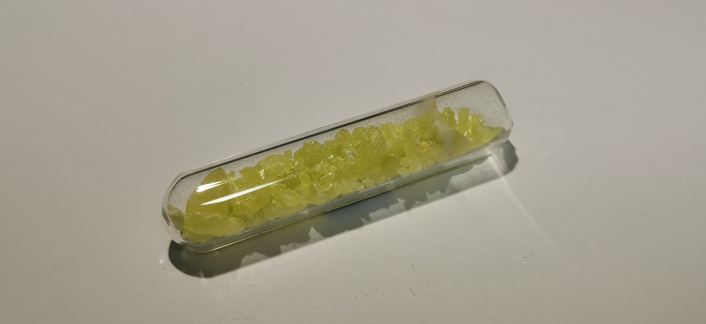

硫
2019.4 斜方硫晶体 99.99% 来自冥灵 
斜方硫：S₈有几种同素异形体，斜方硫、单斜硫、弹性硫等。斜方硫在室温下最稳定，另外两种硫都是通过高温生成的，单斜硫经过数小时会转变为斜方硫，弹性硫经过一年左右会完全转化为斜方硫。
晶体：S₈可以溶解在一些非极性溶剂中，常用甲苯 CS₂ CCl₄等，人工析出得到硫晶体，这种方式多会得到小块的透明晶体。同时火山喷发时产生的硫化物及SO₂等气体会在火山口凝固形成自然的游离硫，它们多是大块的硫晶体。有关冥灵的这块硫晶体我目前也不了解它的产生是以上哪种。